Finding the best budget IEMs for real-world listening.
Hey! I put together this notebook while digging into the current crop of budget earphones. I gathered reviews and frequency measurements from experienced reviewers (Crinacle, Super* Review, Jay's Audio), checked real delivered prices in Germany across Amazon.de and AliExpress (including upcoming 11.11 Singles' Day sale prices), and measured nozzle diameters so nobody gets stuck with ear canal fatigue.
💡 Tap the bookmark icon to save pairs to your shortlist, click any photo for accessories and cables, and use the music deck at the bottom to test track performance.
| IEM Set | Driver | Sound Profile | Nozzle Bore | Amazon DE | Ali 11.11 | Actions |
|---|
No IEMs matched your filters
Try clearing your search query or selecting "All Sets".
The Nozzle & Fit Reality Check
Why the sound doesn't matter if your ears start aching after 20 minutes.
Moondrop Chu II, 7Hz Zero:2, Truthear Gate, Tangzu Wan'er, Delci. Fits virtually everyone comfortably. Standard silicone ear tips slide on easily and seal without stretching your ear canal.
Kefine Klean, DUNU Titan X, Moondrop May, ooopusX Op.22. Secure, normal fit for adult ears. For particularly narrow canals, consider soft medical-grade tips like SpinFit CP100+ or DUNU Candy tips.
Truthear Zero:Red & KZ ZAR. The sound on Zero:Red is world-class reference tuning, but the physical 6.2mm brass stem is chunky. Small ear canals will feel uncomfortable pressure quickly.
How to Buy in Germany and EU Without Surprise Fees
Quick breakdown on AliExpress IOSS vs Amazon.de delivery.
Under EU rules (IOSS), AliExpress collects the German 19% MwSt automatically at checkout for orders under €150. Your package arrives straight to your door via DHL or Hermes in 6 to 10 days with zero customs fees or handling charges.
Amazon Germany prices are typically €6 to €15 higher than AliExpress, but you get next-day Prime delivery and hassle-free 30-day returns, which is invaluable if you are unsure how an IEM will fit your ear shape.
Over-Ear & On-Ear Bench: Hall of Fame Under €100
Top-tier sound does not stop at in-ear monitors. From innovative Chi-Fi releases like the FiiO EH11 retro on-ear, FiiO EH13 ANC, FiiO JT1, and Moondrop Old Fashioned to timeless analog benchmarks from Koss, Philips, and Creative. Strictly capped under €100 ($100), with verified EU street prices, exact driver architectures, and comprehensive sound profiles.
Hybrid 1DD + 4BA + 2 Passive Radiators. Outstanding audio engineering, but retails for ~$260 to $300, exceeding our €100 ceiling by nearly triple.
Gorgeous solid wood cups and plush memory pads, but regular EU street price sits at €149 to €179. Does not compete in the sub-€100 bracket.
Planar magnetic benchmark. Regular EU retail is €125 to €139 (rare clearance dips near €99). However, its 91 dB/mW sensitivity requires a 1W desktop amplifier.
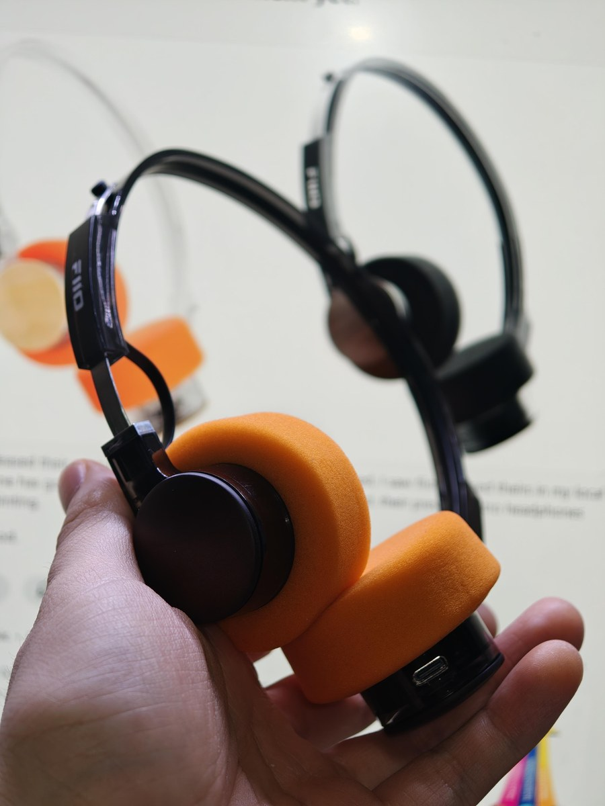
Walkman Retro • Bluetooth 6.0 ~€28 to €33FiiO EH11
Ultra-lightweight 92g retro-futuristic on-ear headphone inspired by 1980s portable cassettes. Features real wood rotary controls on the ear cup rims for volume and track navigation.
Bass: Punchy, clean mid-bass kick with gentle sub-bass slope. Zero boominess or vocal masking.
Mids: Warm, rich, and speech-optimized. Acoustic guitars and vocals have pleasant vintage analog presence.
Treble & Stage: Mellow, soft highs with zero sibilance. Breezy open-air stage aided by outer cup vents.
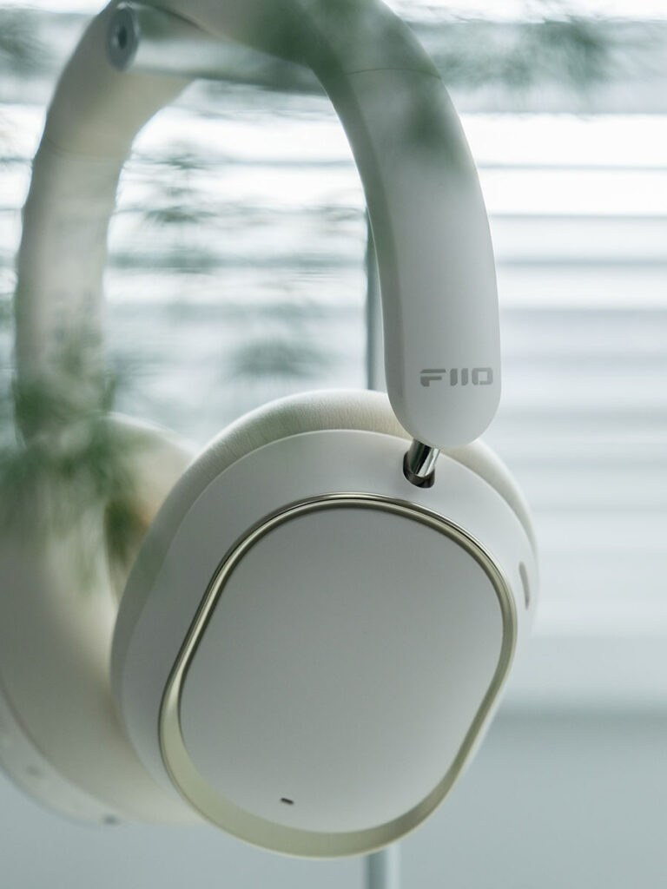
Sapphire Driver • -42dB ANC ~€55 to €65FiiO EH13
Modern foldable over-ear travel headphone equipped with a rigid sapphire-coated composite 40mm dynamic driver, hybrid active noise cancellation, and FiiO Control 10-band PEQ.
Bass: Deep, muscular sub-bass with tactile low-end rumble for electronic, hip-hop, and action films.
Mids: Coherent, neutral-warm with DSP vocal compensation that keeps voices clear when ANC is engaged.
Treble & Stage: Crisp and controlled without cone breakup thanks to sapphire stiffness. Intimate seal.
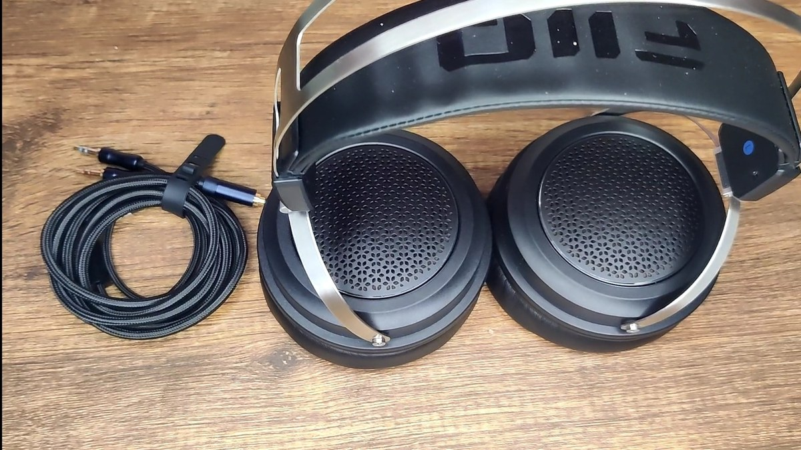
50mm Driver • Mic Cable ~€55 to €65FiiO JT1 (JadeAudio JT1)
The reigning budget closed-back king. Packs massive 50mm PEK+PU+aluminum foil composite diaphragms, dual 3.5mm detachable cable with inline mic, and self-adjusting suspension headband.
Bass: Heavy, physical sub-bass slam and tactile mid-bass impact. Genuinely outperforms gaming headsets.
Mids: Warm, musical, and full-bodied. Vocals have rich lower-midweight with clean separation.
Treble & Stage: Smooth, relaxed treble. Acoustic back vents provide an exceptionally wide gaming soundstage.
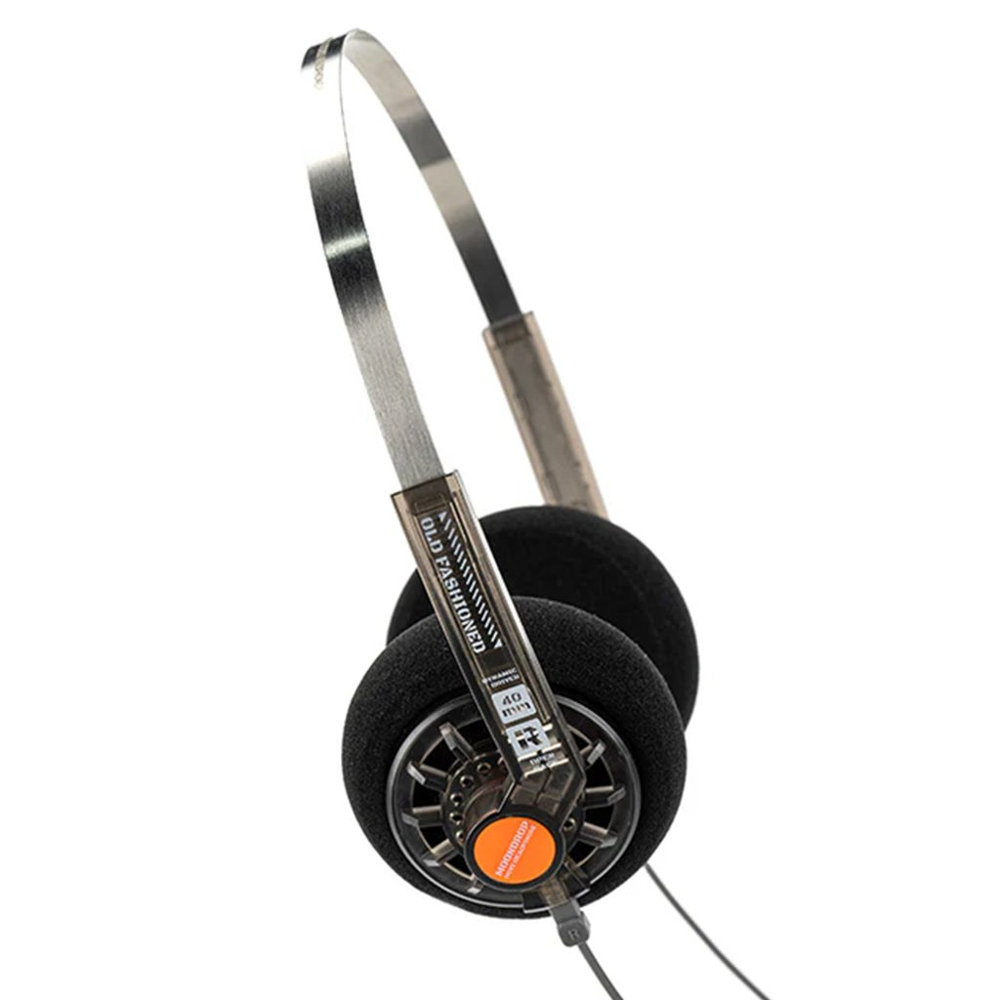
0.78mm 2-Pin • 40mm Driver ~€25 to €32Moondrop Old Fashioned
Retro 1980s Walkman styling with bright foam pads and a featherweight stainless steel headband. Features rare 0.78mm 2-pin sockets, allowing you to use custom IEM cables or Bluetooth neckbands.
Bass: Rolls off below 80Hz due to on-ear foam seal, but delivers snappy mid-bass punch with zero boominess.
Mids: Lush, velvety, and forward. Outstanding vocal and acoustic guitar intimacy.
Treble & Stage: Smooth, non-fatiguing top end. Natural out-of-head bubble characteristic of open foam pads.
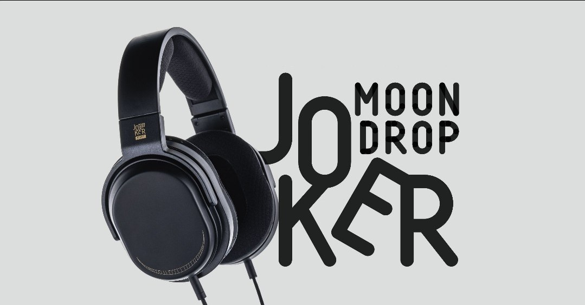
Brass Cavity • Sandable Finish ~€75 to €85Moondrop Joker
Moondrop professional closed-back monitor featuring 50mm dynamic drivers with asymmetric brass cavities. Matte black finish is intentionally designed to patina or be sanded down to raw alloy.
Bass: Fast, lean, and dry. Sub-bass rolls off early; mid-bass is strictly clinical and disciplined.
Mids: Highly forward and analytical. Vocal-centric with acute breath and texture retrieval.
Treble & EQ: Crisp, articulate highs that reveal recording flaws. Transforms into a balanced reference with PEQ.
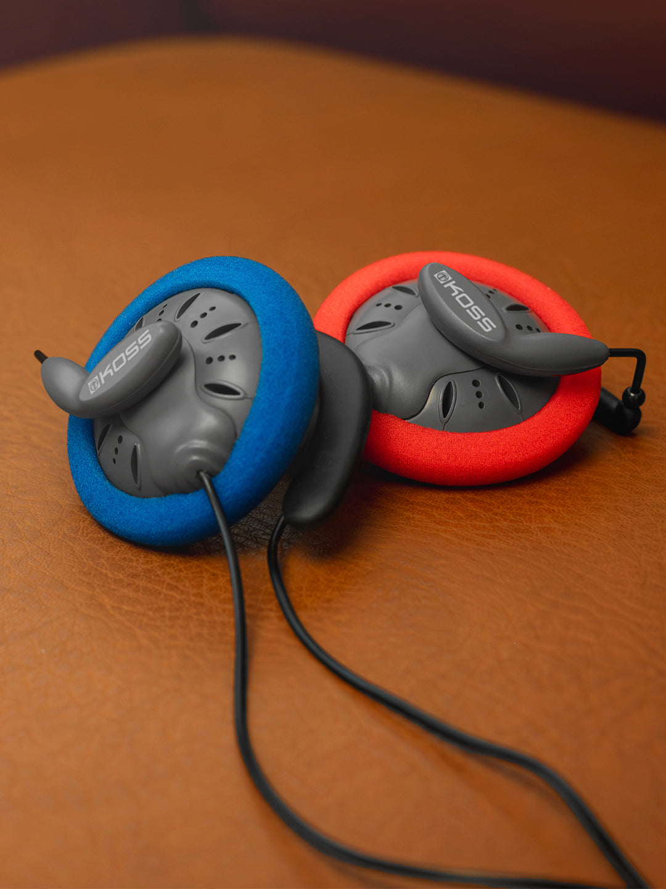
Titanium Driver • Giant Killer ~€24 to €29Koss KSC75
The undisputed giant-killer in personal audio history. Titanium-coated 60-ohm dynamic drivers deliver micro-detail and transparency that embarrass headphones costing quadruple its price.
Bass: Lean, fast, and agile. Rolls off below 75Hz due to clip design, but zero mid-bass bloat.
Mids: Benchmark neutral and vocal-forward. Superb vocal separation with realistic human timbre.
Treble & Stage: Sparkling, airy, and hyper-resolving. Expansive soundstage with pinpoint positional cues.
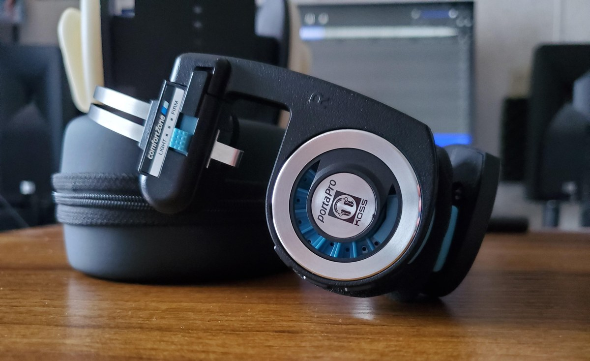
1984 Icon • Comfort Zone ~€38 to €45Koss Porta Pro
In continuous production since 1984. Iconic collapsible spring-steel band with Comfort Zone temporal pressure switches, beloved for its thick, punchy bass and retro street aesthetic.
Bass: Generous mid-bass hump delivering robust thump, physical slam, and addictive rhythmic drive.
Mids: Warm, thick, and analog. Male vocals and rhythm guitars sound full-bodied with vintage weight.
Treble & Stage: Dark, relaxed, and smooth. Zero listener fatigue even on harsh compressed recordings.
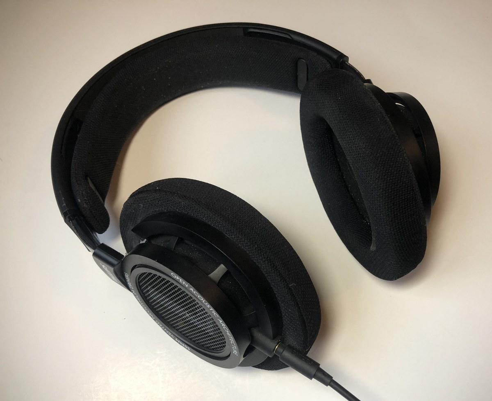
50mm Neodymium • Comfort King ~€75 to €85Philips SHP9500
The supreme long-session comfort champion. 50mm angled drivers, featherweight clamp, breathable mesh cloth pads, and standard 3.5mm jack for V-MODA BoomPro microphone upgrades.
Bass: Tight, linear, and controlled. Lacks sub-bass rumble below 50Hz, but delivers fast mid-bass speed.
Mids: Benchmark neutral and uncolored. Dialogue, acoustic guitar, and piano sound remarkably lifelike.
Treble & Stage: Vast, airy, and three-dimensional soundstage with crisp transient snap for FPS gaming.
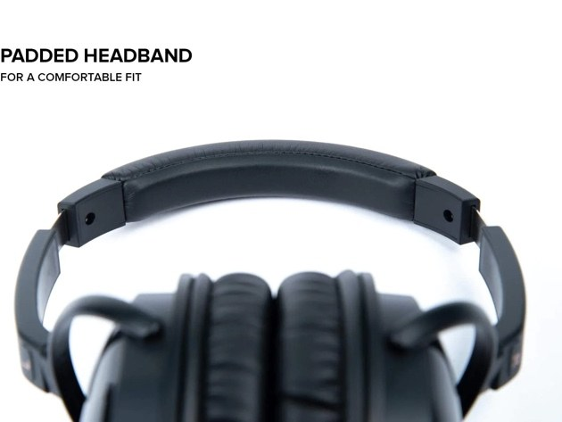
Foster Bio-Cellulose • Organic Timbre ~€55 to €65Creative Aurvana Live! SE
Legendary Foster bio-cellulose driver architecture (shared with vintage Denon wooden flagships). Re-tuned with refined acoustic damping for pure organic warmth and musical intimacy.
Bass: Deep, tactile, and elastic. Bio-cellulose diaphragm delivers natural low-end punch without digital glare.
Mids: Rich, sweet, and liquid. Widely regarded as having the most natural acoustic instrument timbre under €100.
Treble & Stage: Smooth, non-fatiguing highs that preserve detail while eliminating sharp sibilance.
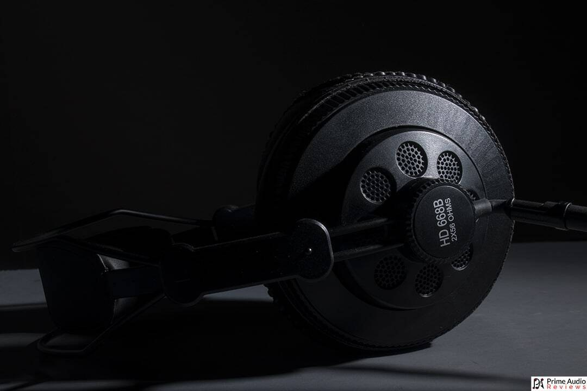
50mm High-Output • Holographic Stage ~€25 to €36Superlux HD668B / HD681
The cult Taiwanese studio monitoring workhorse. 50mm neodymium drivers with semi-open acoustic grilles, delivering clinical detail and a gigantic soundstage on a shoestring budget.
Bass: Tight, punchy, and controlled on HD668B (HD681 adds more sub-bass lift). Zero muddiness.
Mids: Linear, dry, and analytical for vocal monitoring and instrument tracking.
Treble & Stage: Hyper-detailed, bright 8kHz to 10kHz peak. Enormous holographic soundstage for gaming.
Bone Conduction Lab: Shokz vs. Chi-Fi Reality
Transmits sound through cranial bones directly to your inner cochlea, leaving ear canals open for traffic safety. Below: the gold standard Shokz models compared against authentic Chi-Fi alternatives and the common "fake bone conduction" trap.
Plug both ears. Real bone conduction gets louder with richer bass. If audio dies, they are fake air speakers.
Lift pads 2mm off your skin. True bone conduction drops by 90% volume. Air speakers keep playing normally into the room.
Place pods flat on a wooden desk. A real transducer turns the wood into a loud speaker soundboard.
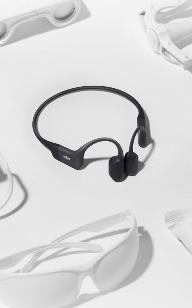
Industry Benchmark • IP67 ~€129 to €139Shokz OpenRun
The global benchmark for road runners and cyclists. Premium 26g featherweight titanium wrap-around band, 8-hour battery, and magnetic fast charging.
Sound: Clear, articulate vocals and speech. Sub-80Hz bass rolls off by design to avoid skin tickle.
Comfort: Near-zero ear fatigue. Stays rock solid during marathons and sprints.
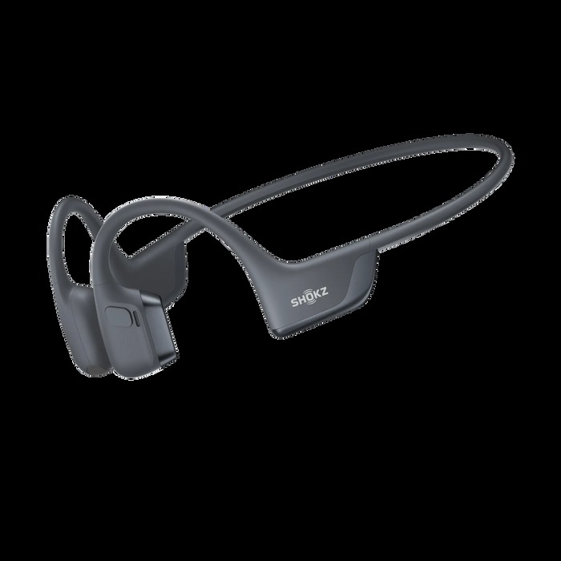
DualPitch Hybrid • Air Bass ~€179 to €199Shokz OpenRun Pro 2
Hybrid breakthrough: bone conduction driver handles mids/highs (zero vibration), while an air-conduction mini-subwoofer delivers real tactile bass down to 50Hz.
Sound: Unrivaled depth for open-ear. Punchy, musical bass without cheekbone buzzing.
Upgrades: USB-C port, 12h battery life, and dual wind-resistant AI microphones.
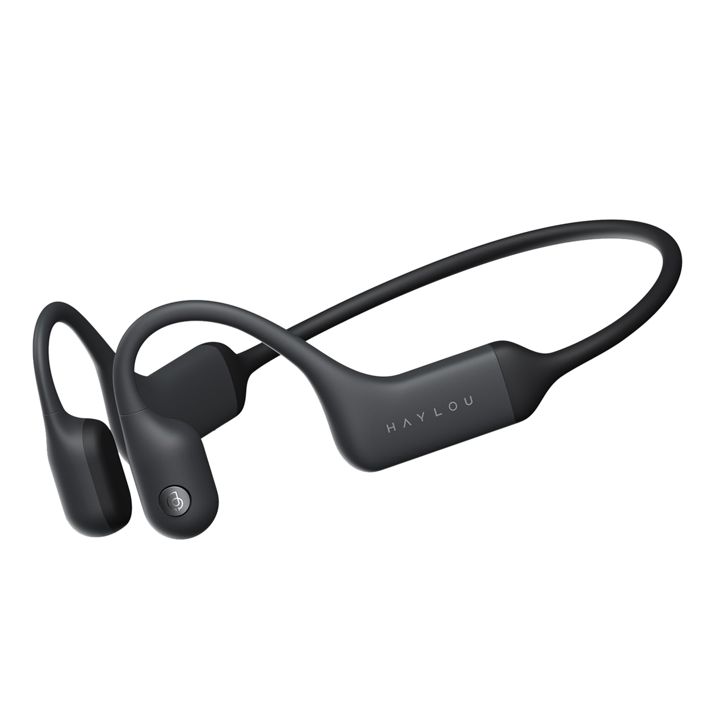
Chi-Fi Hero • Half Shokz Price ~€55 to €69Haylou PurFree BC01
The sole community-vetted Chi-Fi alternative that matches Shokz OpenMove. Full titanium frame, Qualcomm QCC3044 chip with aptX, true IP67 waterproofing, and cVc 8.0 dual mics.
Sound: 85% to 90% of OpenRun vocal performance. Warm mid-bass, crisp dialogue for podcasts.
Fit Note: Slightly snugger clamp force than Shokz (stays locked on trails, slightly more ear pressure).
Audiophile Knowledge & Hardware Toolkit
From eartip acoustic physics and DAC output impedance to lossless audio formats (FLAC), driver diaphragm materials, and target tuning curves. Honest, evidence-backed knowledge without marketing snake oil.
Finding the right ear tip transforms seal stability, eliminates ear fatigue, and fine-tunes frequency response. Reference guide based on Super* Review's Wave Guide series.
- Matte Velvet (Divinus, Sancai): Micro-pores vent ear canal pressure; zero greasy suction feeling.
- High-Tack (Softears UC, S&S): Extreme friction locks heavy IEM shells securely without slipping.
- 3D Swivel (SpinFit): Articulating neck bends along canal curves for leak-free seal.
- Deep Insertion (DUNU S&S): Pushes canal 8kHz resonance higher, smoothing treble bite and maximizing sub-bass grip.
- Shallow Fit (Wide Umbrella): More open ear feeling with lower occlusion, but seal breaks more easily on head turns.
- Wide Bore (FiiO HS18, Softears UC): Unrestricted acoustic path boosts upper treble air and holographic stage width.
- Narrow Bore (CP100+): Acoustic horn funnels bass energy, adding tactile punch while taming peaky treble.
Divinus Velvet & Velvet TWS
- Velvet Texture: Micro-embossed matte coating prevents sweaty, greasy ear canal irritation.
- Pressure Relief: Micro-vented surface gently releases air pressure for long sessions.
- Sound: Smooth, balanced frequency delivery with clean vocal focus.
Softears Ultra Clear (UC)
- Extreme Grip: Ultra-pure medical liquid silicone with natural suction that never slips out.
- Treble Transparency: Crystal-clear bore preserves upper-frequency detail and micro-transients without damping.
- Best For: Heavy metal shells and listeners seeking open, uncolored resolution.
FiiO HS18 (Pressure Saver)
- Featherweight: Only 0.4mm thick medical silicone eliminates radial canal pressure entirely.
- Wide Bore: 0.6mm wide opening preserves soundstage and upper-treble sparkle.
- Best For: Thick 6.2mm nozzles (Truthear Zero) or narrow/sensitive ear canals.
DUNU S&S (Stage & Studio)
- Straight Walls: Cylindrical design maintains continuous airtight contact along the canal.
- Deep Coupling: Delivers massive sub-bass grip, stable deep seal, and expansive stage.
- Best For: Sets that feel loose with standard rounded umbrella ear tips.
SpinFit (W1 & CP-360)
- Swivel Axis: Stem flexes 360 degrees to follow individual ear canal bends naturally.
- Dual-Density: Soft outer umbrella for comfort with a rigid inner core that prevents bore collapse.
- Best For: Asymmetrical canals and listeners who lose their seal when moving their head.
Tangzu Tang Sancai
- Micro-Textured: Matte honeycomb surface vents vacuum pressure and stops ear suction headache.
- Acoustic Balance: Maintains rich bass response without boomy pressure buildup.
- Best For: People sensitive to the "stuffy eardrum" feeling of closed in-ears.